쇼츠 설계도
POSTECH 학생들의 KAIST 방문 솔직후기!
처음에는 과자 탑과 행사 풍경으로 시선을 끌고, 이어 POSTECH 학생들에게 KAIST 방문 소감을 묻는 인터뷰를 보여 줍니다. 고정된 KAIST 제목 틀 안에서 인터뷰 대상과 장면을 바꾸며 마지막까지 솔직한 답변을 이어 갑니다.
영상 정보
| 제목 | POSTECH 학생들의 KAIST 방문 솔직후기! |
|---|---|
| 올린 곳 | KAIST |
| 올린 날 | 20231019 |
| 조회수 | 37573 |
| 길이 | 49.7초 |
| 화면 크기 | 1080 x 1920 |
| 프레임 수(초당) | 29.97 |
| 영상/소리 방식 | h264 / opus |
| 원본 주소 | https://www.youtube.com/watch?v=IyGoQWBCanQ |
1. 화면 틀
화면을 어떤 칸으로 나눴는지(로고, 제목, 영상 칸, 아래 안내)와 크기, 색, 위치입니다.
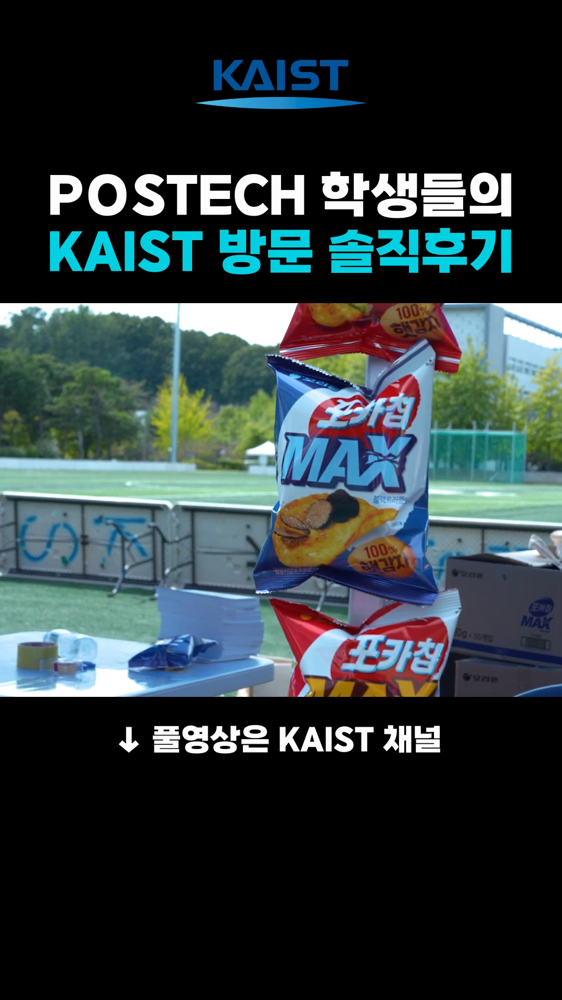
| 무엇이 보이나 | 잰 값 / 확인한 내용 | 근거 |
|---|---|---|
| 세로 화면의 크기 | 1080×1920, 29.97fps | analysis.json |
| 고정된 위쪽 제목 영역과 아래쪽 안내 문구 | 검은 바탕에 KAIST 로고와 흰색·청록색 제목이 있고, 아래에는 ‘↓ 풀영상은 KAIST 채널’ 문구가 유지됩니다. 실제 영상은 가운데 가로 띠 영역에 들어갑니다. | 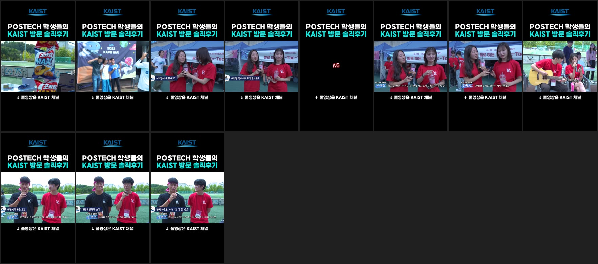 |


2. 시각 요소
영상, 사진, 그림 같은 화면 속 그림이 어떤 것으로 어떻게 쓰였는지입니다. 아래는 컷마다 첫 화면을 모은 표입니다(왼쪽 위부터 번호 순서).
| 무엇이 보이나 | 잰 값 / 확인한 내용 | 근거 |
|---|---|---|
| 가운데 영상 | 행사장 과자 탑으로 시작해 단체·인터뷰 장면, 기타를 연주하며 노래하는 장면, 남학생 인터뷰로 이어지는 현장 촬영입니다. | 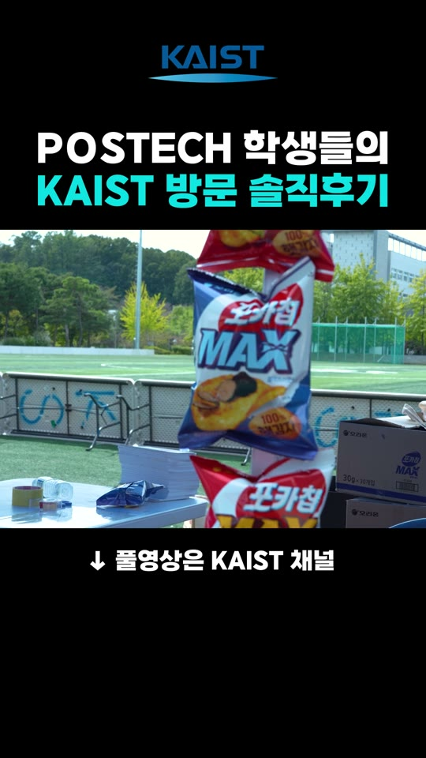 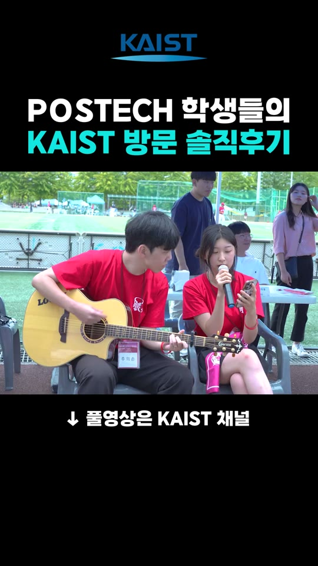 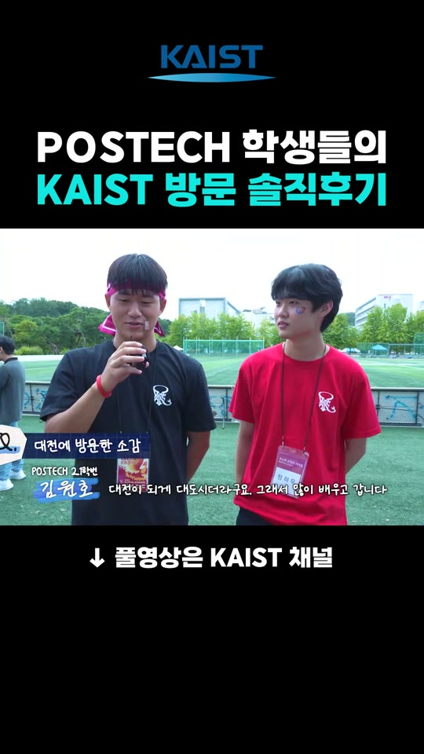 |
| 인터뷰 장면 구성 | 두 여학생 인터뷰 뒤 짧은 ‘NG’ 화면이 나오고, 다시 여학생 답변과 남학생 인터뷰로 넘어갑니다. | 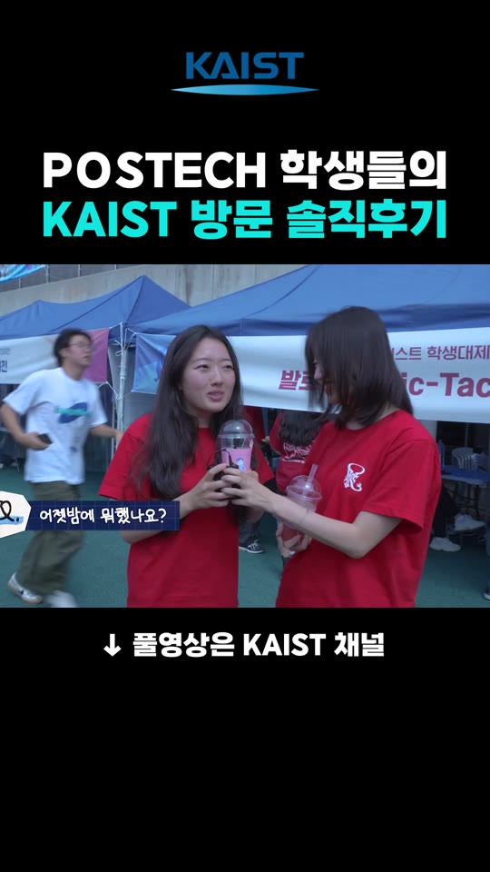 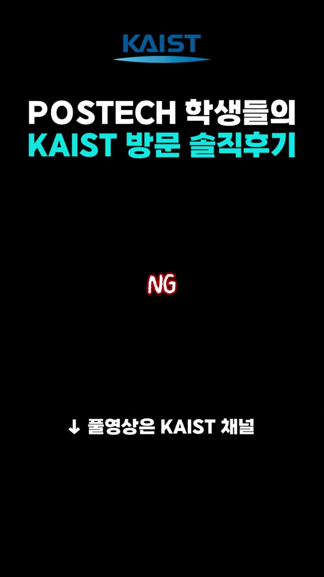 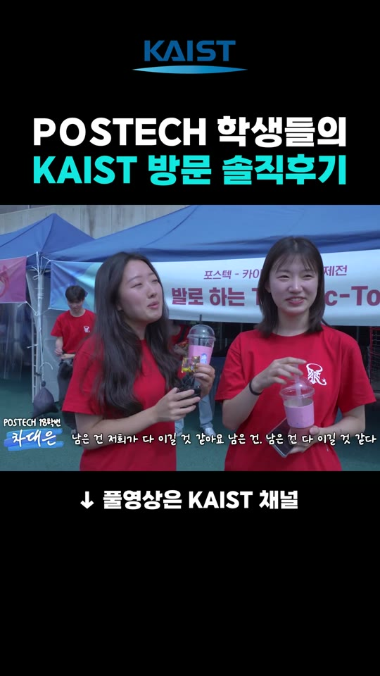 |


3. 글자 (제목 글자, 자막)
화면에 얹힌 글자입니다. 제목 같은 글자와, 하는 말을 옮겨 적은 자막의 내용, 색, 크기, 위치, 나타나는 시간입니다.
| 무엇이 보이나 | 잰 값 / 확인한 내용 | 근거 |
|---|---|---|
| 고정 제목 | ‘POSTECH 학생들의’는 흰색, ‘KAIST 방문 솔직후기’는 청록색 굵은 글씨로 크게 표시됩니다. | 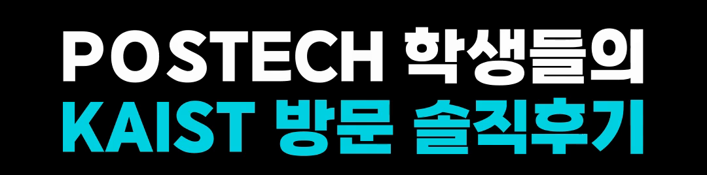 |
| 질문·대사 자막 | 인터뷰 질문은 짙은 파란 띠에 흰 글씨로, 답변은 화면 아래에 흰 글씨로 표시됩니다. 일부 답변에는 이름과 학년 표기가 붙습니다. | |
| 고정 안내 | 화면 아래쪽에 ‘↓ 풀영상은 KAIST 채널’ 문구가 계속 보입니다. |

4. 말소리 (대사, 나레이션)
사람이 하는 말입니다. 누가, 어떤 말투와 빠르기로, 언제부터 언제까지 말하는지 적습니다.
분석 프로그램은 말소리, 배경 음악, 효과음을 따로 갈라서 잴 수 없습니다. 아래 값은 셋이 합쳐진 소리 전체의 값입니다. 각각 무엇이 들어 있는지는 12초 소리 조각을 직접 들어 보고 적습니다.
| 통합 음량 | -18.7 LUFS |
|---|---|
| 소리 폭(LRA) | 6.0 LU |
| 가장 큰 소리(피크) | -3.1 dBFS |
참고: KAIST 공식 쇼츠 솔직후기는 약 -18.7 LUFS(2026-11-15 같은 방법으로 잼). 값이 클수록(0에 가까울수록) 큰 소리입니다.
0.5초 이상 소리가 거의 없는 구간은 없었습니다.
| 무엇이 보이나 | 잰 값 / 확인한 내용 | 근거 |
|---|---|---|
| 말하는 사람과 방식 | 화면에는 진행자의 질문과 POSTECH 학생들의 답변이 보이며, 두 여학생과 남학생 인터뷰가 이어집니다. 정확한 대사와 음성 시작·끝 시각은 귀로 확인 필요. |
말소리만 따로 잰 값은 없습니다. 위 측정은 전체 소리입니다.
5. 배경 음악
말 뒤에 깔리는 음악입니다. 있는지, 어떤 분위기인지, 말소리보다 작은지 적습니다. 음악이 있는지는 프로그램이 판단하지 못하니 소리 조각을 들어 보고 사람이 정합니다. 곡 이름 찾는 방법은 아래 "곡 찾기"에 있습니다.
| 무엇이 보이나 | 잰 값 / 확인한 내용 | 근거 |
|---|---|---|
| 음악 유무와 분위기 | 측정된 소리 수치만으로는 음악을 말소리와 분리할 수 없습니다. audio-clip.mp3를 재생해 귀로 확인 필요. | analysis.json |
| 전체 소리 측정값 | 통합 음량 -18.7 LUFS, 음량 범위 6.0 LU, 최고 음량 -3.1 dBFS. 말소리·음악·효과음이 섞인 전체 값입니다. | analysis.json |
배경 음악만 따로 잰 값은 없습니다. 4번 말소리 칸의 전체 소리 측정을 참고하세요.
6. 효과음
짧게 들어가는 소리입니다(전환할 때의 휙 소리, 강조할 때의 띵 소리 등). 어느 시각에 어떤 소리가 들어가는지 적습니다. 효과음은 프로그램이 찾아내지 못하니 영상을 보고 들으며 사람이 적습니다.
| 무엇이 보이나 | 잰 값 / 확인한 내용 | 근거 |
|---|---|---|
| 짧은 효과음 | 효과음이 있는지와 나오는 시점은 audio-clip.mp3 재생 후 귀로 확인 필요. |
효과음만 따로 잰 값은 없습니다.
컷과 편집점 (분석에 쓰는 말)
컷 11개, 평균 4.52초, 가운데 값 4.77초, 가장 짧은 컷 0.83초, 가장 긴 컷 9.85초
이 칸은 영상의 구성 요소가 아니라 영상을 분석할 때 쓰는 말입니다. 컷은 화면이 바뀌는 한 토막이고, 편집점은 컷과 컷 사이의 경계입니다. 장면은 뜻으로 묶은 컷 몇 개입니다. 컷의 길이와 순서가 도입, 전개, 강조, 마무리로 어떻게 이어지는지 봅니다. 컷은 화면이 확 바뀌는 곳을 프로그램이 찾은 것이라 서서히 바뀌는 전환은 놓칠 수 있습니다.
| 무엇이 보이나 | 잰 값 / 확인한 내용 | 근거 |
|---|---|---|
| 전체 컷 | 49.694초 영상에서 11컷을 찾았습니다. 평균 4.518초, 중앙값 4.771초이며 가장 짧은 컷은 0.834초, 가장 긴 컷은 9.854초입니다. | analysis.json |
| 도입과 전개 | 도입은 0~3.837초의 과자 탑과 행사 풍경 두 컷입니다. 3.837초부터 인터뷰가 이어지고, 16.116~16.950초에 0.834초짜리 ‘NG’ 화면이 잠깐 끼어듭니다. | 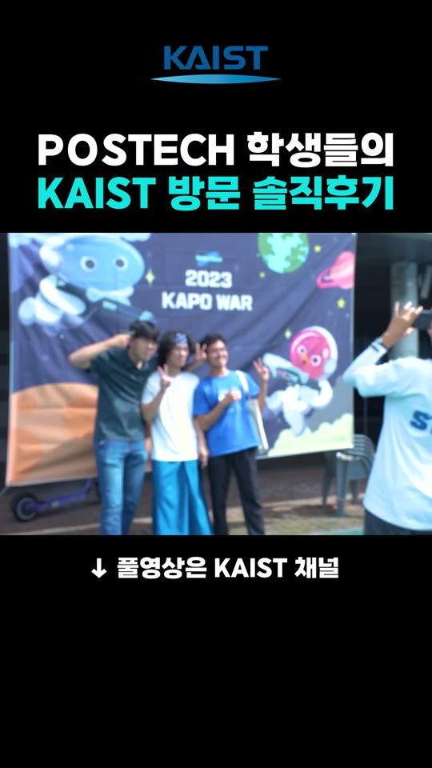 analysis.json |
| 강조와 마무리 | 중간에는 기타 연주 장면(28.528~31.532초)으로 분위기를 바꾸고, 31.532초부터 남학생 인터뷰 세 컷으로 마무리합니다. 마지막 컷은 9.854초로 답변을 충분히 보여 줍니다. | 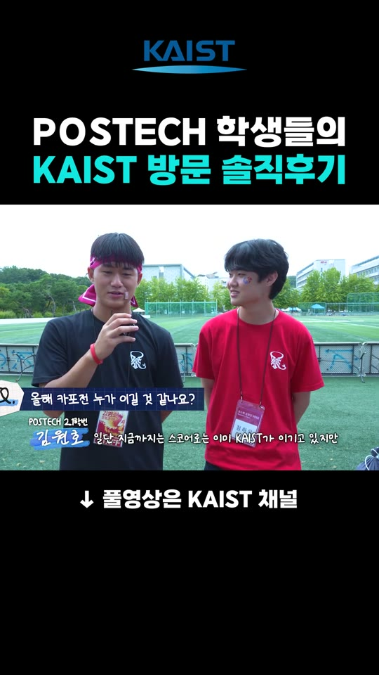 analysis.json |
| 컷이 바뀌는 속도 | 짧은 도입 뒤 3~8초 길이 인터뷰 컷이 이어지고, 짧은 ‘NG’ 컷이 중간에 리듬을 끊습니다. | analysis.json |


컷 목록
| 번호 | 시작(초) | 끝(초) | 길이(초) | 첫 화면 |
|---|---|---|---|---|
| 1 | 0.00 | 1.54 | 1.54 | |
| 2 | 1.54 | 3.84 | 2.30 | |
| 3 | 3.84 | 8.61 | 4.77 | |
| 4 | 8.61 | 16.12 | 7.51 | 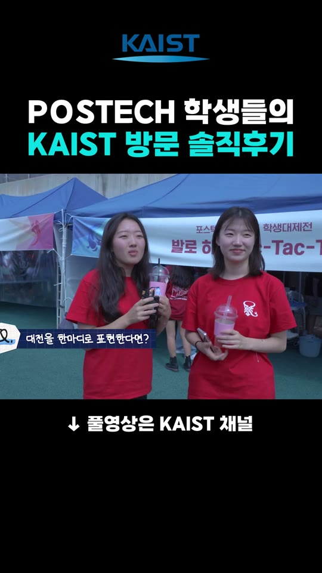 |
| 5 | 16.12 | 16.95 | 0.83 | |
| 6 | 16.95 | 22.32 | 5.37 | |
| 7 | 22.32 | 28.53 | 6.21 | 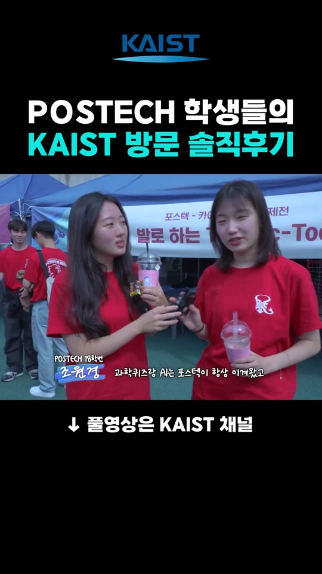 |
| 8 | 28.53 | 31.53 | 3.00 | |
| 9 | 31.53 | 36.37 | 4.84 | |
| 10 | 36.37 | 39.84 | 3.47 | 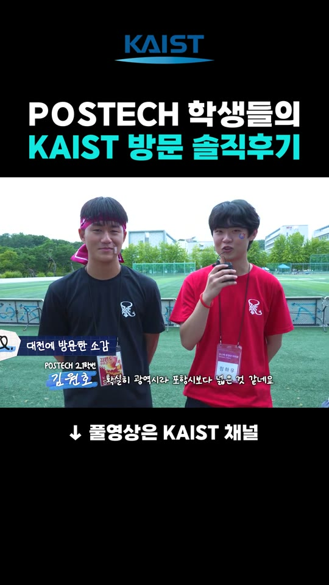 |
| 11 | 39.84 | 49.69 | 9.85 |


폰트 찾기
제목 글자가 있는 부분을 잘라 둔 사진입니다. 글꼴 이름은 사진만으로 확정할 수 없고, 아래 순서로 후보를 좁힙니다.
- 이 사진을 Codex 대화창에 붙여 넣고
이 제목 글꼴과 닮은 무료 글꼴 후보 5개를 알려줘라고 말합니다. 답은 후보일 뿐 정답이 아닙니다. - 후보 이름을 눈누(noonnu.cc)에서 검색해 모양을 눈으로 비교하고, 글꼴 상세 페이지의 라이선스(상업 이용, 재배포)를 읽습니다.
- 글꼴 이미지 검색 서비스(예: 산돌구름 글꼴 찾기, WhatTheFont, WhatFontIs)에 이 사진을 올려 볼 수 있습니다. 영어 글꼴 위주인 서비스가 많고, 무료 범위와 로그인 여부는 직접 확인해야 합니다. 외부 사이트에 올리는 것이므로 공개된 영상의 화면만 올립니다.
- 가장 확실한 방법: 후보 글꼴로 같은 문구를 써서 원본 사진 위에 겹쳐 봅니다. Codex에게
후보 글꼴로 같은 문구를 그려서 원본과 비교해줘라고 부탁하세요.
무료로 쓸 수 있는 글꼴 예: Gmarket Sans(SIL 오픈 폰트 라이선스, 이 프로젝트에 들어 있음), Pretendard. 어떤 글꼴이든 쓰기 전에 라이선스 문서를 직접 읽으세요.
| 후보 | 확신 | 이유 |
|---|---|---|
| 굵은 고딕 계열 (예: Pretendard ExtraBold) | 낮음 | 제목의 획이 두껍고 단순한 고딕 형태입니다. 이미지로는 정확한 글꼴을 구분할 수 없습니다. |
곡 찾기
영상 속 12초를 잘라 둔 소리 조각입니다. 배경 음악만 들리는 구간이 좋습니다.
음악을 듣고 확인하기 전에는 곡을 특정할 수 없습니다. audio-clip.mp3를 직접 듣고, 곡이 궁금하면 보고서의 곡 찾기 안내를 참고하세요. 외부 곡 찾기 사이트에는 사용자가 직접 올려야 합니다.
- 유튜브 쇼츠라면 먼저 화면 아래의 소리 이름을 눌러 봅니다. 음원이 표시되는 영상이면 가장 빠릅니다.
- 곡 식별 서비스에 소리 조각을 올려 봅니다: AudD(audd.io), ACRCloud(acrcloud.com). 둘 다 계정이 필요하고 무료 범위가 정해져 있으며, 정책은 바뀔 수 있습니다. 외부에 올리는 것이므로 공개된 영상의 소리만 올립니다.
- 결과가 없다고 해서 무료 음원이라는 뜻은 아닙니다. 데이터에 없는 곡일 뿐입니다.
- 곡 이름을 알아내도 써도 된다는 허락은 아닙니다. 허락(라이선스)은 따로 확인합니다.
내 쇼츠에 쓸 음악, 효과음을 구하는 곳
- 공유마당(gongu.copyright.or.kr): 곡마다 조건이 다릅니다. 공공누리 제1유형, CC BY처럼 상업 이용이 되는 것만 고르고, 출처 표시 조건을 지킵니다.
- YouTube 오디오 라이브러리(YouTube Studio 안): 유튜브에 올릴 영상이면 저작권 클레임 위험이 낮은 편입니다. 다른 곳에 다시 쓸 때의 조건은 약관을 확인합니다.
- Freesound(freesound.org): 효과음은 CC0 표시된 것만 씁니다.
- 쓰지 않는 것: CC BY-NC(비영리 한정) 표시 음원. 게시하는 영상에는 쓰지 않습니다.
미리 들어 있는 곡과 효과음 외에 음악과 효과음 파일을 더 넣지 않고, 새 파일은 재료 폴더에만 둡니다.
쓴 소리마다 남길 기록
| 곡/효과음 제목 | 만든 사람 | 받은 주소 | 라이선스 이름 | 상업 이용 가능 문구 | 출처 표시 문구 | 받은 날 |
|---|---|---|---|---|---|---|
볼 때 묻는 질문
쇼츠를 볼 때마다 이 여섯 가지를 스스로에게 물어보세요. 설계도를 읽는 방법이자, 내 쇼츠를 점검하는 방법입니다.
- 첫 장면이 관심을 끄는가?
답 행사장 한가운데 높게 쌓인 과자를 보여 줘서 무엇인지 궁금하게 만듭니다. - 가장 먼저 보이는 것은 무엇인가?
답 고정된 KAIST 로고와 ‘POSTECH 학생들의 KAIST 방문 솔직후기’ 제목, 그리고 과자 탑입니다. - 컷이 바뀌는 속도가 내용과 맞는가?
답 인터뷰 답변은 몇 초씩 유지하고 중간에 짧은 NG 화면과 연주 장면을 넣어 리듬을 바꿉니다. - 소리가 화면과 맞는가?
답 말소리와 음악을 직접 듣지 않아 맞는지 확인할 수 없습니다. - 자막이 핵심을 돕는가?
답 질문과 답변 자막, 이름 표기가 인터뷰 내용을 따라가기 쉽게 돕습니다. - 끝나고 남는 메시지는 무엇인가?
답 POSTECH 학생들이 KAIST 방문 경험과 두 학교에 대한 생각을 솔직하게 나눈다는 인상이 남습니다.